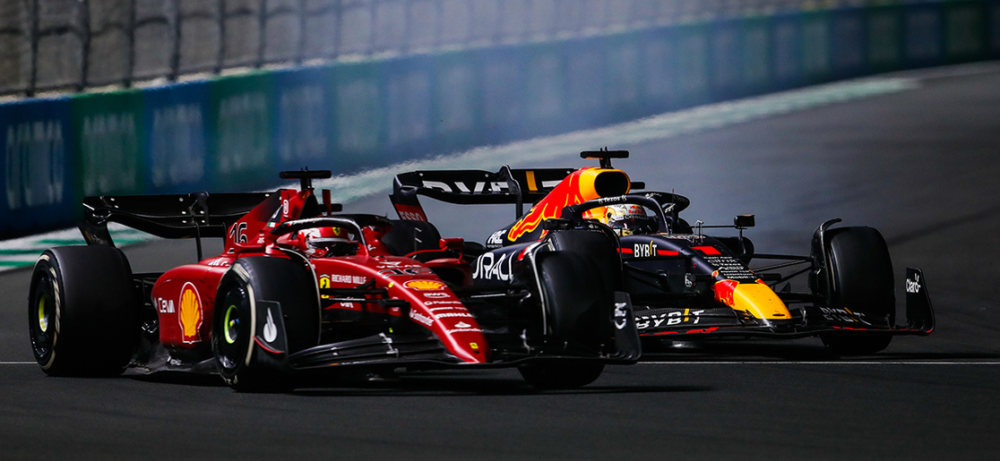
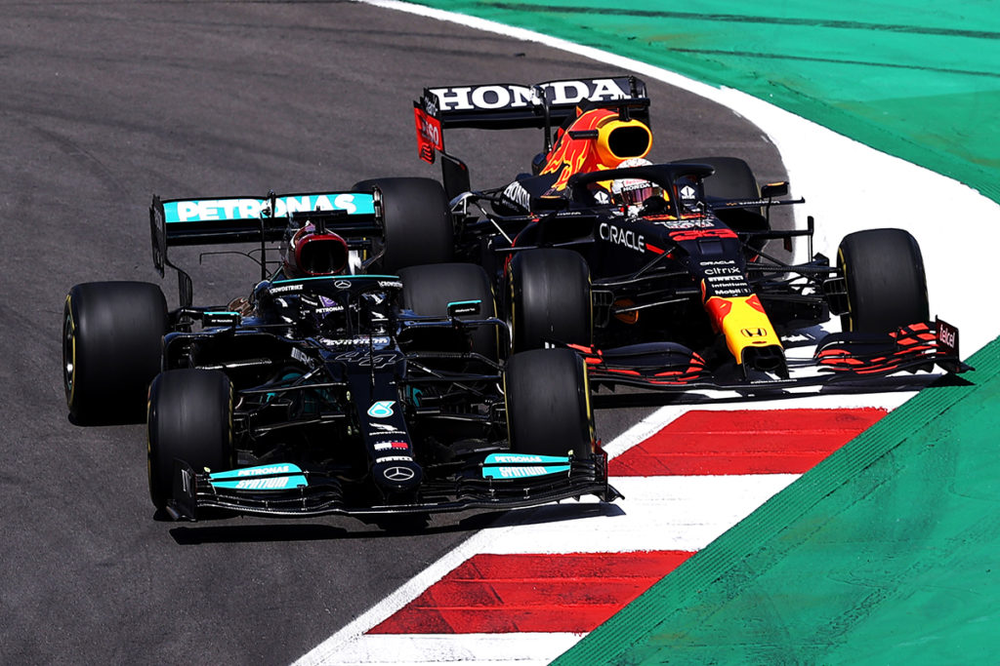
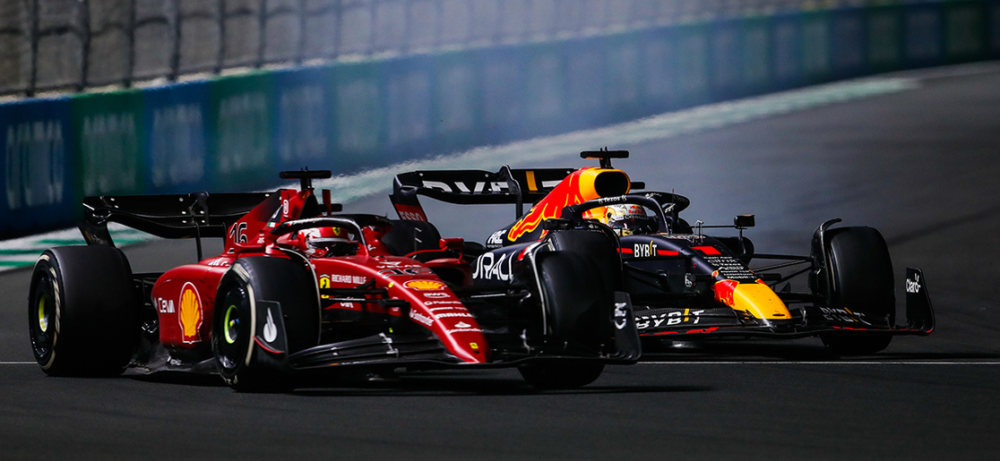
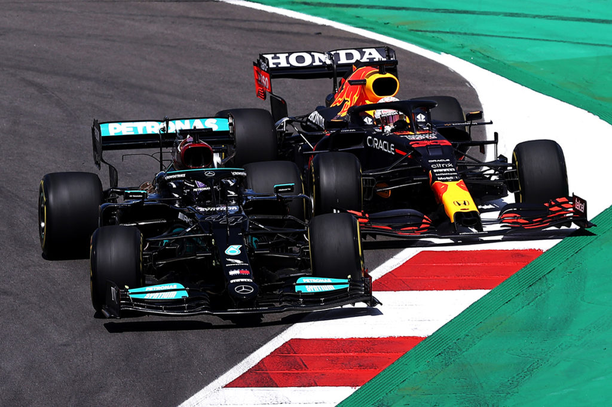
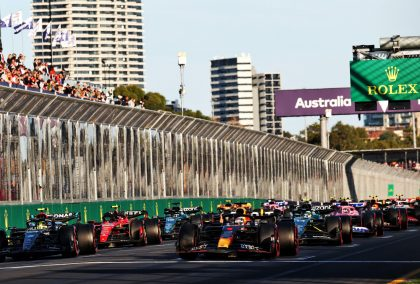
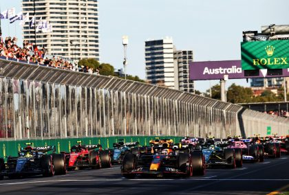

Facts: Verstappen became the youngest driver to compete in Formula One
at the age of 17. He won his first race in 2016 at the Spanish Grand
Prix, becoming the youngest driver to win a race in F1. He also holds
the record for the most career podiums before winning his first
championship (22).
Sergio Perez
DOB: January 26, 1990
From: Guadalajara, Mexico
Current Team: Red Bull Racing
Wins: 5
Podiums: 28
Facts: Perez has been racing in Formula One since 2011 and has
achieved five victories, with Racing Point (now Aston Martin) and
RedBull Racing. He is also known for his consistency and ability to
manage his tires during races.
Lewis Hamilton
DOB: January 7, 1985
From: Stevenage, England
Current Team: Mercedes-AMG Petronas Formula One Team
Wins: 103
Podiums: 192
Facts: Hamilton is considered one of the greatest drivers in the
history of Formula One, with seven World Championships to his name. He
holds numerous records, including the most career pole positions and
the most career points.
George Russell
DOB: February 15, 1998
From: King's Lynn, England
Current Team: Mercedes-AMG Petronas Formula One Team
Wins: 1
Podiums: 9
Facts: Russell is a highly rated young driver who made his debut in
Formula One in 2019 with Williams. He made his move to Mercedes after
spending three seasons with Willaims, he is considered a future star
of the sport.
Charles Leclerc
DOB: October 16, 1997
From: Monte Carlo, Monaco
Current Team: Scuderia Ferrari
Wins: 5
Podiums: 24
Facts: Leclerc won two races in his first season with Ferrari in 2019
and has shown impressive pace and consistency. He is seen as a
potential future World Champion.
Carlos Sainz
DOB: September 1, 1994
From: Madrid, Spain
Current Team: Scuderia Ferrari
Wins: 1
Podiums: 15
Facts: Sainz has been racing in Formula One since 2015 and has
achieved fifteen podium finishes, with McLaren and Ferrari. He is
known for his consistent performances and strong racecraft.
Lance Stroll
DOB: October 29, 1998
From: Montreal, Canada
Current Team: Aston Martin Cognizant Formula One Team
Wins: 0
Podiums: 3
Facts: He is also known for being one of the youngest drivers in the
sport, having made his debut at the age of 18.
Fernando Alonso
DOB: July 29, 1981
From: Oviedo, Spain
Current Team: Aston Martin Cognizant Formula One Team
Wins: 32
Podiums: 101
Facts: Alonso is a two-time World Champion and one of the most
experienced drivers in the sport, having raced in Formula One for over
20 years. He returned to the sport in 2021 after a two-year absence.
Pierre Gasly
DOB: February 7, 1996
From: France
Current Team: Alpine F1 Team
Wins: 1
Podiums: 3
Facts: Gasly made his F1 debut with Toro Rosso (now AlphaTauri) in
2017 before being promoted to Red Bull Racing in 2019. He was demoted
back to Toro Rosso mid-season, but bounced back in 2020 with a
stunning win at the Italian Grand Prix. Gasly is known for his
impressive speed and is highly regarded by his peers and team alike.
Esteban Ocon
DOB: September 17, 1996
From: France
Current Team: Alpine F1 Team
Wins: 1
Podiums: 2
Facts: Ocon made his F1 debut with Manor Racing in 2016 before joining
Force India (now Aston Martin) in 2017. After a year as Mercedes'
reserve driver, he returned to the grid in 2020 with Renault (now
Alpine) and secured his first win at the Hungarian Grand Prix. Ocon is
a talented driver who is known for his consistent pace and racecraft.
Lando Norris
DOB: November 13, 1999
From: United Kingdom
Current Team: McLaren F1 Team
Wins: 0
Podiums: 6
Facts: Norris made his F1 debut with McLaren in 2019 and has impressed
with his speed and maturity. He has secured six podium finishes so far
and is considered to be one of the most promising young talents in the
sport. Norris is known for his fun-loving personality and engaging
social media presence.
Oscar Piastri
DOB: April 6, 2001
From: Australia
Current Team: McLaren F1 Team
Wins: 0
Podiums: 0
Facts: Piastri won the 2020 FIA Formula 3 Championship and is
currently part of the McLaren F1 Team. He is highly rated by those
within the sport and is seen as a potential future star.
Alex Albon
DOB: March 23, 1996
From: Thailand
Current Team: Williams Racing
Wins: 0
Podiums: 2
Facts: Albon made his F1 debut with Toro Rosso in 2019 before being
promoted to Red Bull Racing later that year. After a disappointing
2020 season, he was dropped by Red Bull and joined Williams Racing for
2022. Albon is known for his smooth driving style and is highly
regarded for his work ethic and determination.
Logan Sargeant
DOB: December 31, 2000
From: United States
Current Team: Williams Racing
Wins: 0
Podiums: 0
Facts: Sargeant is a highly rated young driver who currently competes
in the Formula 1 Championship. He won the 2018 ADAC Formula 4
Championship and has shown impressive speed and racecraft in his
junior career.
Yuki Tsunoda
DOB: May 11, 2000
From: Japan
Current Team: Scuderia AlphaTauri
Wins: 0
Podiums: 0
Facts: Tsunoda made his F1 debut with AlphaTauri in 2021 and impressed
with his speed and aggression. He is highly rated by those within the
sport and is seen as a potential future star.
Nyck de Vries
DOB: February 6, 1995
From: Netherlands
Current Team: Scuderia AlphaTauri
Wins: 0
Podiums: 0
Facts: de Vries won the 2019 FIA Formula 2 Championship, earning him a
chance to test for the Mercedes Formula 1 team.
Kevin Magnussen
DOB: October 5, 1992
From: Roskilde, Denmark
Current Team: Haas F1 Team
Wins: 0
Podiums: 1
Facts: Magnussen started his racing career in karting and won the
Danish championship in 2008. He then went on to win the Formula
Renault 3.5 Series championship in 2013 before making his Formula One
debut with McLaren in 2014.
Nico Hulkenberg
DOB: August 19, 1987
From: Emmerich am Rhein, Germany
Current Team: Haas F1 Team
Wins: 0
Podiums: 0
Facts: Hulkenberg holds the record for the most Formula One starts
without a podium finish, with 179 starts. However, he has had success
in other racing series, winning the 2015 24 Hours of Le Mans with
Porsche.
Valtteri Bottas
DOB: August 28, 1989
From: Nastola, Finland
Current Team: Alfa Romeo Racing
Wins: 10
Podiums: 67
Facts: Bottas was signed by Mercedes in 2017 as a replacement for
retired world champion Nico Rosberg. He has since helped Mercedes win
four consecutive constructors' championships and has finished as high
as second in the drivers' championship.
Zhou Guanyu
DOB: May 30, 1999
From: Shanghai, China
Current Team: Alfa Romeo Racing
Wins: 0
Podiums: 0
Facts: Zhou is the first driver from China to be signed to Alfa Romeo
Racing. He won the Formula 2 feature race at the Monaco Grand Prix in
2021 and is considered a promising young talent in the sport.
 



 
